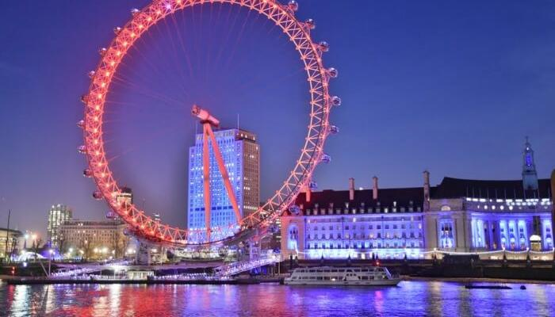

The capital of England and the United Kingdom London can perhaps be called the most iconic city in the world.The city stands on the River Thames in the south-east of England. It is brimming with history and hasb een home to the Royal Family for a long time. Visitors here love its modern vibe but more than that, they are charmed by its old world charm that can only be felt when you do actually visit the city.
| Big-Ben |
London-Eye  |
Tower-of-London |
Westminster-Abbey |
| Weather | Next |